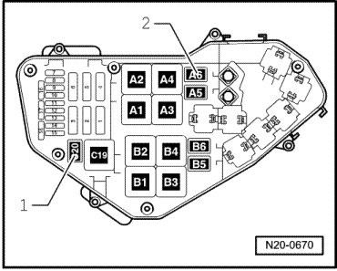
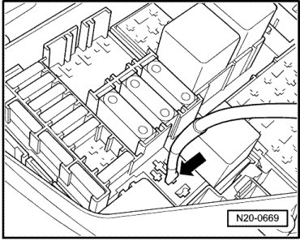
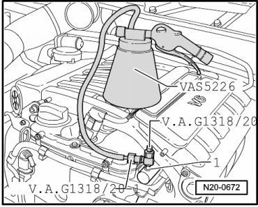
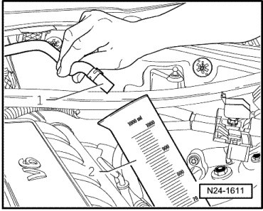
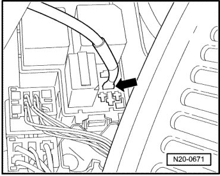
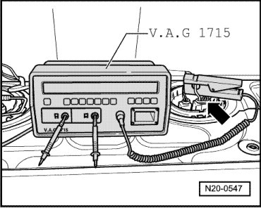
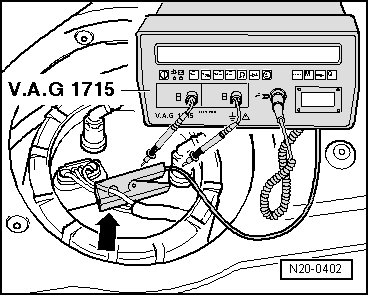
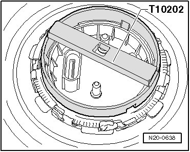
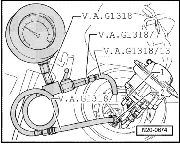
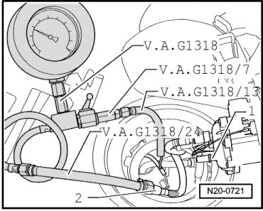

Fuel Pumps, Checking
Fuel Pumps, Checking
--> [ Delivery Quantity, Checking ]
--> [ Current Consumption, Checking ]
--> [ Check Valve, Checking ]
Special tools, testers and auxiliary items required
• Wrench (T10202)
• Pressure gauge (V.A.G 1318)
• Adapter (V.A.G 1318/7)
• Adapter (V.A.G 1318/9)
• Hose (V.A.G 1318/13)
• Pressure gauge adapter (VAG 1318/17)
• Remote control connection (V.A.G 1348/3A)
• Multi meter (V.A.G 1715)
• Spring-type clip pliers (VAS 5024A)
• Diesel extractor (VAS 5226)
• Adapter (V.A.G 1318/20)
• Adapter (V.A.G 1318/20-1)
• Hose (V.A.G 1318/24)
• Adapter cable (V.A.G 1348/3-3)
• Measuring container
• Wiring diagram
Delivery Quantity, Checking
Test Conditions
• Fuses - 13 - and - 14 - - arrows - must be removed from their sockets.

• Fuel pump relays - 1 - and - 2 - for left and right fuel delivery units must be removed from their sockets.

• Battery voltage at least 11.5 V
Test Sequence
- Remove fuel filler cap from fuel filler tube.
- Connect remote control for VAG 1348 (V.A.G 1348/3A) with the adapter cable (V.A.G 1348/3-3) to connection - arrow - for fuel pump relay for right fuel delivery unit.

- Connect positive clamp of - 1 - of remote control to positive terminal in engine compartment.
- Screw adapter (V.A.G 1318/20-1) on to adapter (V.A.G 1318/20).

- Turn valve (on T-piece) counterclockwise until completely open.
CAUTION!
Fuel supply lines are under pressure! Before opening fuel system, connect diesel extractor (VAS 5226) and release pressure.
- Remove breather valve.
- Connect adapter (V.A.G 1318/20) with adapter (V.A.G 1318/20-1) and diesel extractor (VAS 5226) to bleed valve - 1 -.

- Turn valve (on T-piece) clockwise into bleed valve to stop.
- When the fuel pressure has been released, the fuel system may be opened.
Check Delivery Quantity of Right Pump
- Pull fuel supply hose - 1 - off fuel rail.

- Hold hose in measuring container - 2 - with capacity of at least 1000 cm3.
- Empty measuring container before making measurement.
- Operate remote control for 15 seconds: At least 800 cm 3 fuel per 15 seconds must be delivered.
Check Delivery Quantity of Left Pump
- Connect remote control for VAG 1348 (V.A.G 1348/3A) with adapter cable (V.A.G 1348/3-3) to connection - arrow - for fuel pump relay for left fuel delivery unit.

- Empty measuring container before making measurement.
- Operate remote control for 15 seconds again. At least 800 cm 3 fuel per 15 seconds must be delivered.
- Also test both fuel delivery units as follows:
- Connect adapter (V.A.G 1348/3-3) to fuel pump relay connections for left and right fuel delivery units.
- Operate remote control for 10 seconds: At least 800 cm 3 fuel per 10 seconds must be delivered.
If the minimum delivery rate is not attained:
- Check the fuel lines for possible restrictions (kinks) or blockages.
If lines are OK:
- Replace the fuel filter:
If the delivery rate has been attained but nevertheless you suspect a fuel supply system malfunction (e.g. intermittent failure of fuel supply system)
- Check current consumption of fuel pumps --> [ Current Consumption, Checking ].
Current Consumption, Checking
Check the Left Fuel Pump Current Consumption
- Reconnect all disconnected fuel lines.
- Connect the multi meter (V.A.G 1715) current clamp to the 4-pin connector contact wire - 1 - - arrow - on the wiring harness to the left fuel delivery unit.

- Start the engine and run at idle speed.
- Measure current draw of fuel pump. Specified value: max. 11 amps.
• If malfunction in fuel system is sporadic, test can also be performed during a road test, but a second person is required.
If the current draw is exceeded:
- Left Fuel Pump (FP) malfunctioning, replace fuel pump unit--> [ Fuel Delivery Unit, Fuel Level Sensor and Suction Jet Pumps ] Service and Repair.
Check the Right Fuel Pump Current Consumption
- Connect current clamp of multi meter (V.A.G 1715) to the wire of the 4-pin connector contact - 1 - - arrow - from wiring harness to right fuel delivery unit.

• The right fuel pump is not activated under all operating conditions. For this reason, it is activated using output diagnostic test mode.
- Connect vehicle diagnosis, testing and information system (VAS 5051).
- Switch ignition on.
- Press the buttons for "Vehicle Self-Diagnosis", " Engine Electronics" and "Output Diagnostic Test Mode (DTM)" one after another on the display.
- Press the right arrow button on the display for the output diagnostic mode test "Fuel Pump 2 Relay - J49" to initiate fuel pump activation.
- Measure current draw of fuel pump. Specified value: max. 11 amps.
If the current draw is exceeded:
- Right fuel pump is faulty. Replace fuel delivery unit --> [ Fuel Delivery Unit, Fuel Level Sensor and Suction Jet Pumps ] Service and Repair.
Check Valve, Checking
Conditions
• Remote control for VAG 1348 (V.A.G 1348/3A) is still connected.
• With this check, the fuel supply line connections from the fuel delivery units to the point at which the pressure gauge (V.A.G 1318) is connected will be checked for leaks at the same time.
Test Sequence
- Turn valve on T-piece of adapter (V.A.G 1318/20) counterclockwise until completely open.
- Connect pressure tester (V.A.G 1318) to breather valve - 1 - as shown using adapter (V.A.G 1318/20), (V.A.G 1318/20-1), (V.A.G 1318/9) and diesel extractor (VAS 5226).

- Screw valve on T-piece of adapters (V.A.G 1318/20) clockwise into bleed valve to stop.
- Open cut-off tap of pressure tester and operate remote control briefly to bleed air.
- Then, close pressure gauge shut-off tap - arrow - (lever perpendicular to direction of flow).

- Operate remote control at short intervals, until a pressure of approximately 4 bar has built up.
CAUTION!
Danger of spray when opening the shut-off tap diesel extractor (VAS 5226) must be connected.
- If pressure builds up too high, lower excess pressure by carefully opening the shut-off tap.
- Watch pressure drop on gauge. After 10 minutes the pressure must not drop below a 3.0 bar decrease.
If the pressure drops:
- Check fuel lines and connections to fuel tank for leaks.
If no fault is detected in the wiring:
CAUTION!
Fuel supply lines are under pressure! Before opening fuel system, connect diesel extractor (VAS 5226) and release pressure.
- In addition, wrap a cloth around the connection to catch fuel which runs out.
- Remove pressure gauge (V.A.G 1318) with adapters.
Check Right Pump Check Valve
Test Conditions
• Fuel pump relays - 1 - and - 2 - for left and right fuel delivery units must be removed from their sockets.
Test Sequence
- Disconnect 4 pin connector from the left flange
- Remove locking ring from left sensor flange (fuel filter) using fuel tank sensor wrench (T10202).

- Carefully pry up sensor flange and raise it slightly.
- Disconnect connector next to fuel filter for attaching pressure tester (V.A.G 1318).
- Pull fuel supply hose - 2 - from right fuel delivery unit off fuel filter - 1 -.

- Let fuel from connecting piece - 1 - flow back into tank.
- Close pressure gauge shut-off tap - arrow - (lever perpendicular to direction of flow).
- Connect pressure tester (V.A.G 1318) with adapter (V.A.G 1318/7), hose adapter (V.A.G 1318/13) and adapter (V.A.G 1318/17) as shown.
• Ensure that fuel supply line connection engages audibly when joined.
- Attach connectors to the filter housing and flange again.
- Connect remote control for VAG 1348 (V.A.G 1348/3A) with the adapter cable (V.A.G 1348/3-3) to connection - arrow - for fuel pump relay for right fuel delivery unit.
- Operate remote control at short intervals, until a pressure of approximately 4 bar has built up.
- Watch pressure drop on gauge. After 10 minutes the pressure must not drop below a 3.0 bar decrease.
If the pressure drops:
- Right fuel pump is faulty. Replace fuel delivery unit --> [ Fuel Delivery Unit, Fuel Level Sensor and Suction Jet Pumps ] Service and Repair.
To change pressure tester set-up for left fuel pump:
- Open lever of pressure tester and let fuel flow back to fuel tank through hose (V.A.G 1318/13).
Check Left Pump Check Valve
- Pull fuel supply hose - 2 - from left fuel delivery unit off fuel filter - 1 -.

- If necessary, disconnect the connectors from the flange and filter housing and then attach pressure tester (V.A.G 1318).
- Close pressure gauge shut-off tap - arrow - (lever perpendicular to direction of flow).
- Connect pressure tester (V.A.G 1318) with adapter (V.A.G 1318/7), hose adapter (V.A.G 1318/13) and adapter (V.A.G 1318/24) as shown.
• Ensure that fuel supply line connection engages audibly when joined.
- Connect remote control for VAG 1348 (V.A.G 1348/3A) with adapter cable (V.A.G 1348/3-3) to connection - arrow - for fuel pump relay for left fuel delivery unit.
- Operate remote control at short intervals, until a pressure of approximately 4 bar has built up.
- Watch pressure drop on gauge. After 10 minutes the pressure must not drop below a 3.0 bar decrease.
If the pressure drops:
- Left fuel pump is faulty. Replace left fuel delivery unit --> [ Fuel Delivery Unit, Fuel Level Sensor and Suction Jet Pumps ] Service and Repair.
- Open lever of pressure tester and let fuel flow back to fuel tank through hose (V.A.G 1318/13).
- Remove pressure gauge (V.A.G 1318) with adapters.